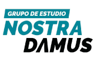

🎯
Ruta clara
Organizamos el aprendizaje por objetivos: base, dominio, velocidad y nivel admisión. El alumno sabe qué debe mejorar y hacia dónde avanzar.

Grupo NostradamusNo te preparamos para estudiar más. Te entrenamos para competir mejor.
En Grupo Nostradamus no trabajamos con una preparación genérica. Somos un grupo de estudio preuniversitario en Lima que entrena postulantes con método, práctica intensiva, simulacros tipo admisión y seguimiento académico real.
La UNI exige velocidad, profundidad y resistencia académica. Por eso, el postulante necesita una ruta, no solo una lista de clases.
Organizamos el aprendizaje por objetivos: base, dominio, velocidad y nivel admisión. El alumno sabe qué debe mejorar y hacia dónde avanzar.
No basta con entender la teoría. El postulante debe resolver, equivocarse, corregir y volver a competir con problemas tipo admisión UNI.
Evaluamos avances, detectamos debilidades y acompañamos al estudiante para que no pierda ritmo ni enfoque durante su preparación.
Una preparación seria combina conocimiento, entrenamiento y control del avance.
Identificamos nivel, vacíos y ritmo de trabajo.
Ordenamos conceptos para evitar errores repetidos.
Práctica constante con problemas y simulacros.
Velocidad, estrategia y mentalidad de examen.
Para el postulante que no quiere “pasar clases”, sino prepararse con disciplina para pelear una vacante.
Este grupo de estudio preuniversitario está pensado para alumnos que postulan a la UNI, necesitan orden académico, práctica exigente y una comunidad que mantenga el ritmo de preparación.
Respuestas rápidas para alumnos y padres que están evaluando dónde prepararse.
Competimos con academias, pero nuestra identidad es ser un grupo de estudio preuniversitario especializado. La diferencia está en el enfoque: seguimiento, práctica intensiva y preparación más cercana.
Sí. Nuestro enfoque principal es la preparación para la Universidad Nacional de Ingeniería, con ciclos diseñados para distintos niveles y tiempos de postulación.
Depende de tu nivel actual, tu base académica y la fecha en la que deseas postular. Puedes escribirnos por WhatsApp y te orientamos.
Cuéntanos tu nivel y fecha de postulación. Te ayudamos a elegir el ciclo adecuado.